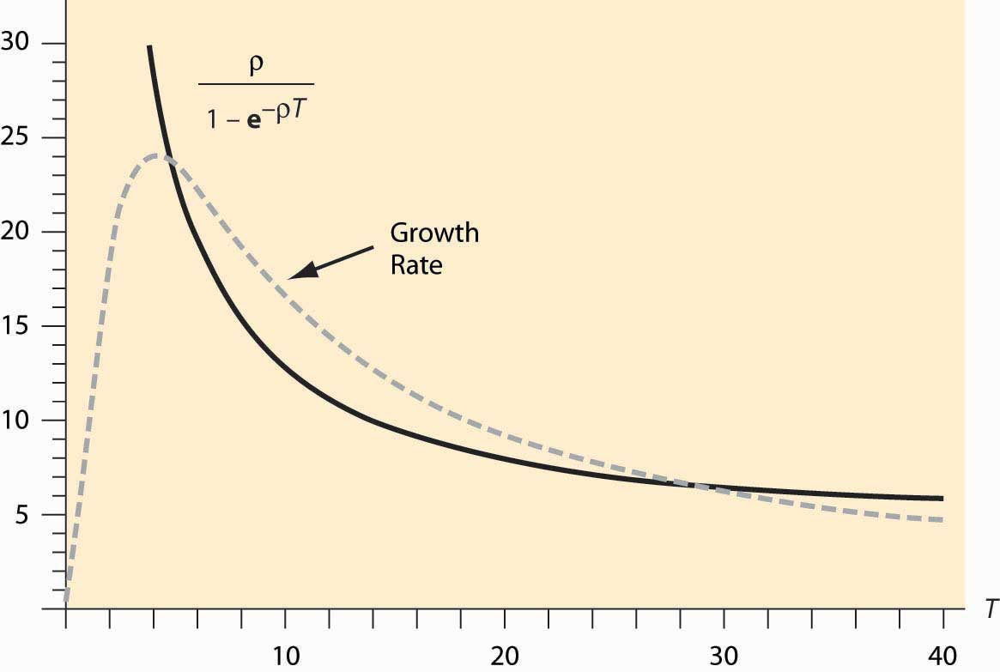

A tree grows slowly but is renewable, so the analysis of Section 11.4 "Resource Extraction" doesn’t help us to understand when it is most profitable to cut down the tree. Consider harvesting for pulp and paper use. In this case, the amount of wood chips is what matters to the profitability of cutting down the tree, and the biomass of the tree provides a direct indication of this. Suppose the biomass sells for a net price p, which has the costs of harvesting and replanting deducted from it, and the biomass of the tree is b(t) when the tree is t years old. It simplifies the analysis slightly to use continuous time discounting where
Consider the policy of cutting down trees when they are T years old. This induces a cutting cycle of length T. A brand new tree will produce a present value of profits of
This profit arises because the first cut occurs at time T, with discounting e-ρT, and produces a net gain of pb(T). The process then starts over, with a second tree cut down at time 2T, and so on.
Profit maximization gives a first-order condition on the optimal cycle length T of
This can be rearranged to yield
The left-hand side of this equation is the growth rate of the tree. The right-hand side is approximately the continuous-time discount factor, at least when T is large, as it tends to be for trees, which are usually on a 20- to 80-year cycle, depending on the species. This is the basis for a conclusion: Cut down the tree slightly before it is growing at the interest rate. The higher that interest rates are, the shorter the cycle for which the trees should be cut down.
The pulp and paper use of trees is special, because the tree is going to be ground up into wood chips. What happens when the object is to get boards from the tree, and larger boards sell for more? In particular, it is more profitable to get a 4 × 4 than two 2 × 4s. Doubling the diameter of the tree, which approximately raises the biomass by a factor of six to eight, more than increases the value of the timber by the increase in the biomass.
It turns out that our theory is already capable of handling this case. The only adaptation is a change in the interpretation of the function b. Now, rather than representing the biomass, b(t) must represent the value in boards of a tree that is t years old. (The parameter p may be set to one.) The only amendment to the rule for cutting down trees is as follows: The most profitable point in time to cut down the tree occurs slightly before the time when the value (in boards) of the tree is growing at the interest rate.
For example, lobsters become more valuable as they grow. The profit-maximizing time to harvest lobsters is governed by the same equation, where b(T) is the value of a lobster at age T. Prohibiting the harvest of lobsters under age T is a means of insuring the profit-maximizing capture of lobsters and preventing overfishing.
The implementation of the formula is illustrated in Figure 11.3 "Optimal solution for T". The dashed line represents the growth rate while the solid line represents the discount rate, which was set at 5%. Note that the best time to cut down the trees is when they are approximately 28.7 years old and, at that time, they are growing at 6.5%. Figure 11.3 "Optimal solution for T" also illustrates another feature of the optimization—there may be multiple solutions to the optimization problem, and the profit-maximizing solution involves cutting from above.
Figure 11.3 Optimal solution for T
The U.S. Department of the Interior is in charge of selling timber rights on federal lands. The department uses the policy of maximum sustainable yieldPolicy that maximizes the long-run average value of a sustainable resource. to determine the specific time that the tree is cut down. Maximum sustainable yield maximizes the long-run average value of the trees cut down; that is, it maximizes
Maximum sustainable yield is actually a special case of the policies considered here, and arises for a discount factor of 0. It turns out (thanks to a formula known variously as l’Hôpital’s or l’Hospital’s Rule) that the
Thus, the rule as ρ → 0, and this is precisely the same rule that arises under maximum sustainable yield.
Thus, the Department of the Interior acts as if the interest rate is zero when it is not. The justification given is that the department is valuing future generations at the same level as current generations—that is, increasing the supply for future generations while slightly harming the current generation of buyers. The major consequence of the department’s policy of maximum sustainable yield is to force cutting of timber even when prices are low during recessions.